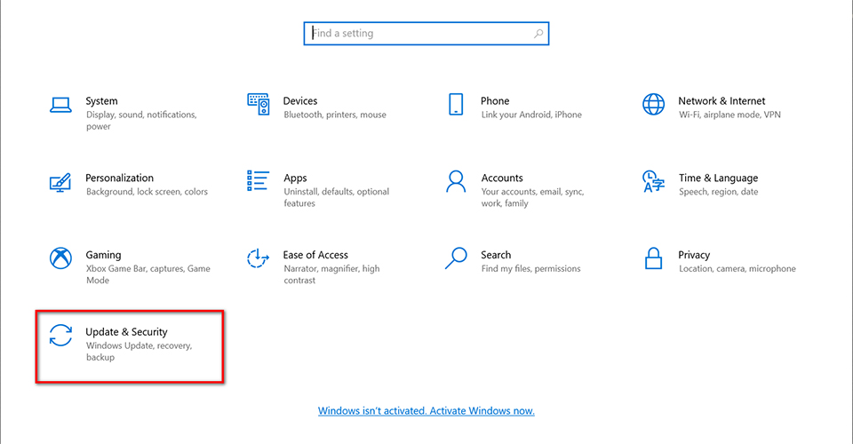
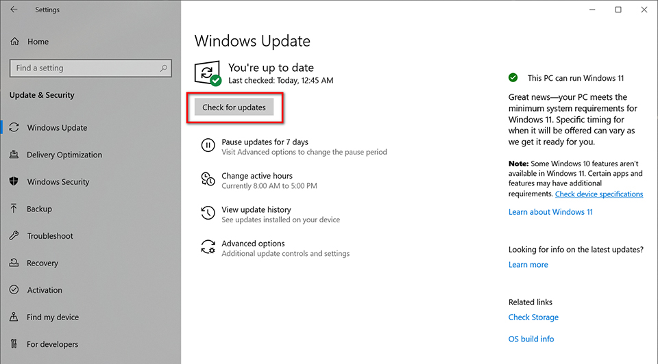
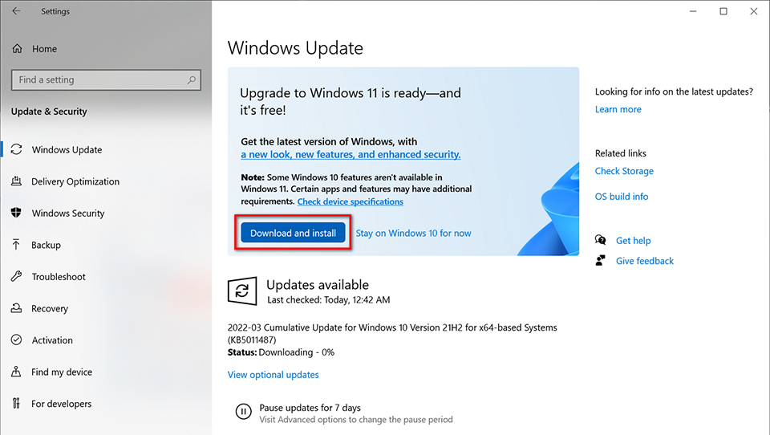
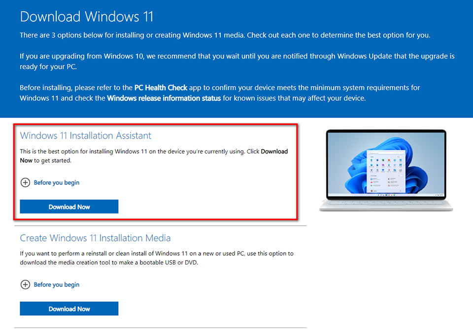
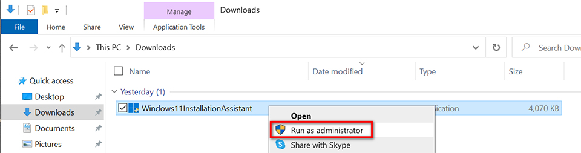
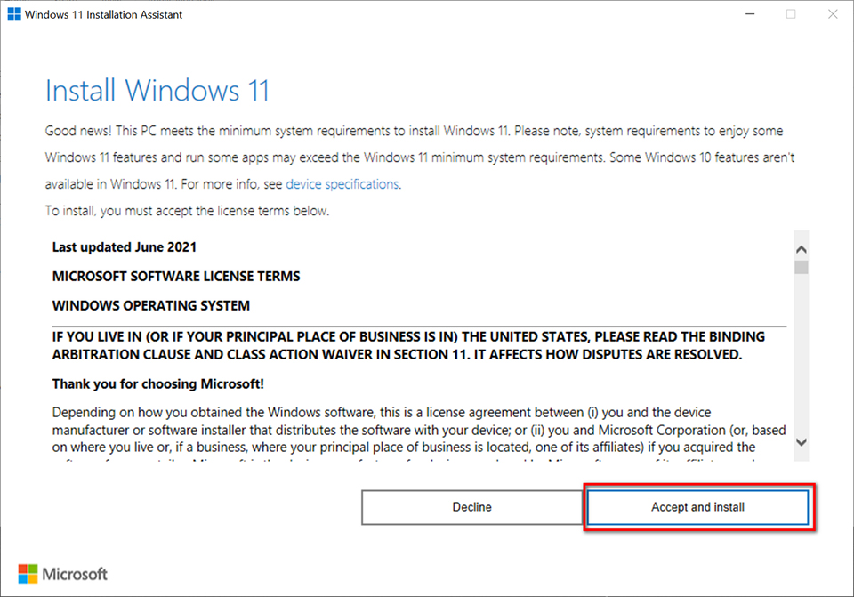

Windows 10 기술 지원 종료에 따른 Windows 11 필수 업그레이드 안내
모든 업무용 PC를 Windows 11로 업그레이드하는 것은 필수 보안 조치입니다.
서문 : 사무PC 사용자 임직원 필독
임직원 여러분께,
본 문서는 전사적 운영체제(OS) 업그레이드의 중요성과 절차를 안내하기 위해 작성되었습니다. Microsoft의 공식 발표에 따라, 2025년 10월 14일부로 Windows 10에 대한 모든 기술 지원 및 보안 업데이트가 공식적으로 종료됩니다.
기술 지원 종료는 단순히 새로운 기능이 추가되지 않는 것을 넘어, 새로 발견되는 보안 위협에 대한 방어가 불가능해짐을 의미합니다. 이로 인해 PC가 악성 코드, 랜섬웨어 등 각종 사이버 공격에 매우 취약해져 회사의 핵심 정보 자산이 유출될 수 있는 심각한 보안 문제가 발생할 수 있습니다.
모든 업무용 PC를 Windows 11로 업그레이드하는 것은 선택 사항이 아닌, 회사의 정보 자산을 보호하기 위한 필수 보안 조치입니다.
저희 전산팀은 모든 임직원 여러분께서 이번 전환을 원활하고 안전하게 완료하실 수 있도록 지원하고자 합니다. 본 안내에 따라 빠짐없이 업그레이드를 진행해 주시기 바랍니다.
Windows 11 업그레이드의 필요성 및 핵심 이점
Windows 11로의 전환은 기술 지원 종료에 대응하는 수동적인 조치를 넘어, 임직원 여러분의 업무 환경을 더욱 안전하고 생산적으로 만들기 위한 선제적인 전략입니다. 최신 운영체제는 보안 강화는 물론, 업무 효율성을 높여 회사의 경쟁력을 제고하는 핵심 이점을 제공합니다.
- 강화된 보안
Windows 10의 지원이 종료되면 더 이상 새로운 보안 패치가 제공되지 않습니다. 이는 PC가 최신 해킹 기술과 바이러스에 무방비 상태로 노출된다는 것을 의미합니다. Windows 11은 지속적인 최신 보안 업데이트를 통해 이러한 위협으로부터 회사의 중요한 정보 자산을 보호하는 가장 기본적인 방어선 역할을 합니다.
- 향상된 생산성
Windows 11은 현대적인 하이브리드 업무 환경에 최적화되어 있습니다. 특히, 여러 창을 화면에 손쉽게 배열하는 '스냅 레이아웃' 기능과 개인화된 정보를 한눈에 보여주는 '위젯' 등은 복잡한 멀티태스킹 환경에서 사용자의 스트레스를 줄이고 업무 집중도를 극대화하여, 모든 임직원의 실질적인 업무 효율 향상에 기여합니다.
- 미래 기술과의 호환성
IT 환경은 끊임없이 변화하고 있습니다. 최신 운영체제를 사용하는 것은 향후 도입될 새로운 업무용 소프트웨어(software)나 하드웨어(hardware)와의 원활한 호환성을 보장하는 가장 확실한 방법입니다. Windows 11은 미래의 기술 표준을 지원하며, 지속적인 업무 혁신을 위한 안정적인 기반이 되어줄 것입니다.
안정적인 전환을 위해, 업그레이드에 앞서 다음의 필수 준비 사항을 반드시 확인해야 합니다.
업그레이드 사전 준비: 체크리스트
PC 호환성 확인 (가장 중요)
가장 먼저 현재 사용 중인 PC가 Windows 11을 설치할 수 있는지 공식적으로 확인해야 합니다. Windows 10 버전 20H2 이상 사용자는 자동으로 설치 되어있습니다.
Microsoft의 'PC 상태 검사' 앱을 다운로드하여 실행하면 업그레이드 가능 여부를 즉시 확인할 수 있습니다.
PC 상태 검사 앱 다운로드: 앱 다운로드
최소 시스템 요구사항 검토
'PC 상태 검사' 앱에서 PC가 호환되지 않는다고 표시될 경우, 아래의 최소 시스템 요구사항 표를 참고하여 어떤 항목이 충족되지 않는지 확인하시기 바랍니다.
| 항목 | 최소 요구사항 |
|---|---|
| 프로세서 | 1GHz 이상 속도, 2개 이상의 코어를 갖춘 호환되는 64비트 프로세서 또는 SoC(System on a Chip) |
| RAM | 4GB 이상 |
| 저장 공간 | 64GB 이상의 저장 디바이스 |
| 시스템 펌웨어 | UEFI, 보안 부팅(Secure Boot) 가능 |
| TPM | 신뢰할 수 있는 플랫폼 모듈(TPM) 버전 2.0 |
| 그래픽 카드 | DirectX 12 이상 호환 (WDDM 2.0 드라이버) |
| 디스플레이 | 9인치 이상, HD 해상도(720p), 컬러 채널당 8비트 |
중요 데이터 백업 (권장)
업그레이드 시 개인 파일은 기본적으로 유지되지만, 만일의 사태에 대비하여 중요 업무 자료는 반드시 백업하는 것을 강력히 권장합니다.
논리적으로 분리된 D 드라이브에, C 드라이브의 저장된 중요 업무파일을 백업하시기 바랍니다. 가장 추천드리는 방법은 물리적으로 분리된 백업저장공간에 별도로 백업하는 방법입니다.
모든 준비가 완료되었다면, 다음 절차에 따라 업그레이드를 진행해 주십시오.
Windows 11 업그레이드 절차
본 섹션은 실제 업그레이드를 위한 단계별 절차를 안내합니다.
업그레이드를 시작하기 전, 아래 절차를 반드시 숙지하고 이행해야 합니다. 전산팀에서 테스트를 거친 가장 안정적인 권장 방법과, 특수한 상황을 위한 대안 방법을 안내합니다.
3.1. 권장 방법: 'Windows 업데이트'를 통한 업그레이드
이 방법은 시스템 안정성이 가장 높고 전산팀에서 공식적으로 권장하는 절차입니다.
- 현재 사용 중인 Windows 10 PC에서 '시작' > '설정' > '업데이트 및 보안' > 'Windows 업데이트' 메뉴로 이동합니다.
- '업데이트 확인' 버튼을 클릭하여 시스템이 최신 상태인지 확인합니다.
- PC가 업그레이드 준비되면, Windows 11 업그레이드 안내가 표시됩니다. 이때 '다운로드 및 설치' 버튼을 클릭합니다.
- 화면에 나타나는 소프트웨어 사용 조건에 동의하고 설치를 계속 진행합니다.
- 설치 과정에서 PC가 여러 번 다시 시작됩니다. 이는 정상적인 과정이므로, 절대 전원을 끄지 말고 기다려 주십시오.
- 모든 과정이 완료되면 Windows 로그인 화면이 나타납니다. 기존 계정으로 로그인하면 업그레이드가 최종 완료됩니다.
3.2. 대안 방법: 'Windows 업데이트'가 표시되지 않을 경우
Microsoft에서 순차적으로 업그레이드를 배포하거나, 특정 드라이버와의 호환성을 최종 확인하는 경우 옵션이 바로 표시되지 않을 수 있습니다.
권장 방법으로 업그레이드 옵션이 나타나지 않는 경우에만 다음 방법을 사용해 주십시오.
- 대안 1: Windows 11 설치 도우미 사용
Microsoft에서 제공하는 전용 응용 프로그램을 통해 업그레이드를 시작하는 방법입니다. 'Windows 11 설치 도우미'를 다운로드하여 실행하면, PC 호환성 확인 후 화면의 안내에 따라 설치를 진행할 수 있습니다. 보안을 위해 반드시 공식 Microsoft 웹사이트에서만 다운로드해야 합니다.
- 대안 2: Windows 11 설치 미디어 제작
부팅 가능한 USB 드라이브 제작에 익숙한 사용자를 위한 고급 옵션입니다. 설치 미디어를 제작한 후, Windows 10이 실행 중인 상태에서 해당 미디어의 setup.exe 파일을 실행하면 개인 파일과 앱을 유지하는 업그레이드를 시작할 수 있습니다.
-
Microsoft 공식 웹 사이트에서 “Windows 11 Installation Assistant” 다운로드
3.3. 권장 방법: 윈도우즈 업데이트 통한 업그레이드



3.4. 대안방법: 윈도우즈 설치도우미 - Windows 11 Installation Assistant



자주 묻는 질문 (FAQ)
- Q: Windows 11 업그레이드에 비용이 드나요?
A: 아니요, 현재 사용 중인 정품 Windows 10 PC가 최소 시스템 요구사항을 충족하면 무료로 업그레이드할 수 있습니다. - Q: 업그레이드하면 기존 파일과 프로그램은 어떻게 되나요?
A: 기본적으로 개인 파일은 그대로 유지됩니다. 하지만 일부 오래된 프로그램이나 호환되지 않는 앱은 업그레이드 과정에서 제거될 수 있습니다. 업그레이드 후 재설치가 필요한 앱도 있지만, 일부는 Windows 11에서 더 이상 작동하지 않을 수 있으므로 중요 자료는 사전에 백업하는 것을 권장합니다. - Q: 업그레이드하는 데 시간이 얼마나 걸리나요?
A: PC 사양과 인터넷 속도에 따라 다르며, 일반적인 업데이트보다 시간이 더 소요될 수 있습니다. 단, 업그레이드 파일을 다운로드하는 동안에는 PC를 계속 사용할 수 있습니다. - Q: 업그레이드 후, 다시 Windows 10으로 돌아갈 수 있나요?
A: 네, 업그레이드 후 10일 이내에는 파일과 데이터를 유지한 채로 Windows 10으로 돌아갈 수 있습니다. 10일이 지나면 데이터를 백업한 후 Windows 10을 새로 설치해야 합니다. - Q: 2025년 10월 14일 이후에도 Windows 10을 계속 사용하면 어떻게 되나요?
A: PC는 계속 작동하지만, 새로운 보안 위협을 막아주는 보안 업데이트가 중단됩니다. 이는 해킹, 랜섬웨어 등 각종 사이버 공격에 매우 취약해져 회사의 중요 데이터가 유출될 수 있는 심각한 보안 문제입니다.
문의 및 기술 지원 안내
안내된 절차를 따랐음에도 어려움이 발생하거나, PC가 최소 요구사항을 충족하지 못하는 등 스스로 해결하기 어려운 경우 전산팀으로 문의해 주시기 바랍니다.
- 문의처: 경영지원본부 전산팀
- C.P.: 책임매니저 권세창(010-6565-2351), 책임매니저 신명관(010-3151-5642)
- E-mail: shry19@sejin-c.co.kr, coolbrains@sejin-c.co.kr
문의 시에는 원활하고 신속한 지원을 위해 성함, 부서, 그리고 문제 상황(오류 메시지 포함)을 구체적으로 설명해 주시기 바랍니다.
모든 임직원 여러분의 적극적인 협조는 우리 모두의 정보 자산을 지키는 데 필수적입니다. 감사합니다.